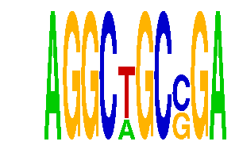

family_11 |
|---|
|  |
| Download PWM |
| Download instances (motifs) |
| Show motif distribution |
Query_ID | Query_Consensus | Subject_Name | Source_DB | Subject_ID | Length | Orientation | Offset | Divergence | Overlap | Subject_Consensus |
|---|---|---|---|---|---|---|---|---|---|---|
| family_11 | AGGCTGCCGA | WWTAAGGC | JASPAR | PF0127 | 8 | as given | -4 | 0.039 | 4 | TTTAAGGC |
| family_11 | AGGCTGCCGA | MIZF | JASPAR | MA0131.1 | 10 | reverse-complement | 5 | 0.679 | 5 | NAACGTCCGC |
Sequence | Start_position (from start) | Start_position (from end) | Average conservation | Best conservation score | Instance_with_best_CS | Best_Z-score | Instance_with_best_ZS | Strand |
|---|---|---|---|---|---|---|---|---|
| chr3:137663678-137664678 | 805 | 815 | 0.0171 | 0.035 | AGGCWGCSGA | 17.349785 | AGGCTGCSGA | 1 |
| chr8:37159045-37160045 | 442 | 452 | 0.9945 | 0.999 | AGGCTGCSGA | 18.784922 | AGGCWGCSGA | 1 |
| chr16:7069455-7070455 | 483 | 493 | 0.0871 | 0.319 | AGGCWGCSGA | 18.784922 | AGGCWGCSGA | -1 |
| chr19:58992866-58993866 | 904 | 914 | 0.2267 | 0.624 | AGGCTGCSGA | 18.784922 | AGGCWGCSGA | 1 |
| chr4:150471268-150472268 | 340 | 350 | 0.0022 | 0.006 | AGGCTGCSGA | 18.784922 | AGGCWGCSGA | 1 |
| chr17:69454546-69455546 | 484 | 494 | 0.0092 | 0.052 | AGGCTGCSGA | 18.784922 | AGGCWGCSGA | -1 |
| chr9:24581818-24582818 | 808 | 818 | 0.012 | 0.026 | AGGCWGCSGA | 17.349785 | AGGCTGCSGA | 1 |
| chr1:166391413-166392413 | 585 | 595 | 0.3742 | 0.968 | AGGCTGCSGA | 18.784922 | AGGCWGCSGA | 1 |
| chr11:97199841-97200841 | 564 | 574 | 0.4437 | 0.93 | AGGCWGCSGA | 17.349785 | AGGCTGCSGA | 1 |
| chr10:92723866-92724866 | 389 | 399 | 0.0086 | 0.013 | AGGCTGCSGA | 18.784922 | AGGCWGCSGA | 1 |
| chr4:150386210-150387210 | 541 | 551 | 0.0036 | 0.014 | AGGCTGCSGA | 18.784922 | AGGCWGCSGA | 1 |
| chr6:83406467-83407467 | 509 | 519 | 0.0042 | 0.014 | AGGCWGCSGA | 18.784922 | AGGCWGCSGA | -1 |
| chrX:23400387-23401387 | 504 | 514 | NA | NA | AGGCWGCSGA | 18.784922 | AGGCWGCSGA | 1 |
| chr4:129448624-129449624 | 876 | 886 | 0.1603 | 0.446 | AGGCWGCSGA | 18.784922 | AGGCWGCSGA | 1 |
| chr8:46972744-46974590 | 1598 | 1608 | 0.0317 | 0.052 | AGGCWGCSGA | 17.349785 | AGGCTGCSGA | 1 |
| chr13:98013993-98014993 | 813 | 823 | 0.0001 | 0.001 | AGGCWGCSGA | 18.784922 | AGGCWGCSGA | 1 |
| chr12:74947485-74948485 | 550 | 560 | 0.0065 | 0.015 | AGGCWGCSGA | 17.349785 | AGGCTGCSGA | -1 |
| chr13:12461280-12462280 | 304 | 314 | 0.0071 | 0.012 | AGGCWGCSGA | 17.349785 | AGGCTGCSGA | 1 |
| chr3:51451773-51452773 | 458 | 468 | 0.9976 | 1 | AGGCWGCSGA | 17.349785 | AGGCTGCSGA | 1 |
| chr4:115854947-115855947 | 475 | 485 | 0.0015 | 0.003 | AGGCTGCSGA | 18.784922 | AGGCWGCSGA | -1 |
| chr2:35115003-35116003 | 314 | 324 | 0.4405 | 0.841 | AGGCWGCSGA | 18.784922 | AGGCWGCSGA | 1 |